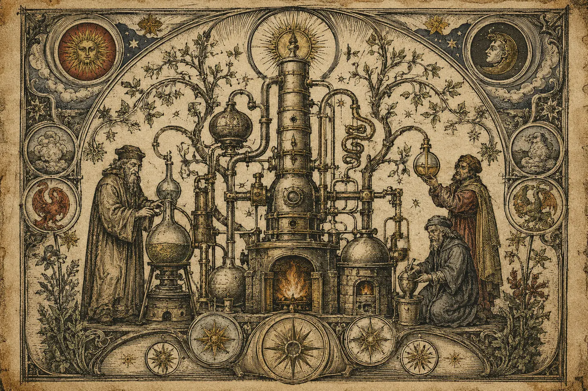

Hardware · Primary project
RFIDemon
A Raspberry Pi RFID analysis and cloning workstation for authorised MIFARE Classic testing.
View projectProjects
Hardware · Primary project
A Raspberry Pi RFID analysis and cloning workstation for authorised MIFARE Classic testing.
View projectCTF competition · DMU Hackers
DMU Hackers' flagship jeopardy-style CTF. Web, OSINT, Crypto, Reversing and Pwn. Core Incursion ran 30th May 2026.
View project
OT security tool
An OT network modelling sandbox. Drag assets into Purdue zones, wire conduits, and read an advisory security rating, entirely in the browser.
View project